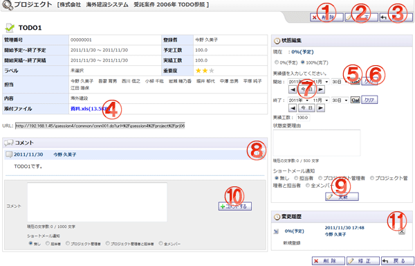

TODO情報を表示する画面です。

機能説明
削除ボタンTODO削除確認画面へ遷移します。 |
修正ボタンTODO編集画面へ遷移します。 |
|---|---|
戻るボタン遷移元画面へ遷移します。 |
添付ファイル添付ファイルをダウンロードします。 |
カレンダーボタンポップアップでカレンダー画面が開きます。カレンダー画面で日付をクリックすると、クリックした日付がセットされます。 |
クリアボタン年・月・日コンボを未選択状態にします。 |
前日・今日・翌日ボタン年・月・日コンボを切り替えます。 |
コメント削除ボタンコメント削除確認画面へ遷移します。コメントを削除します。 |
更新ボタン状態変更履歴の登録完了画面へ遷移します。状態変更履歴を登録します。 |
コメントするボタン入力したコメントを登録します。 |
変更履歴削除ボタン状態変更履歴の削除確認画面へ遷移します。状態変更履歴を削除します。 |
表示・入力項目説明
URL
表示している画面のURLを表示します。